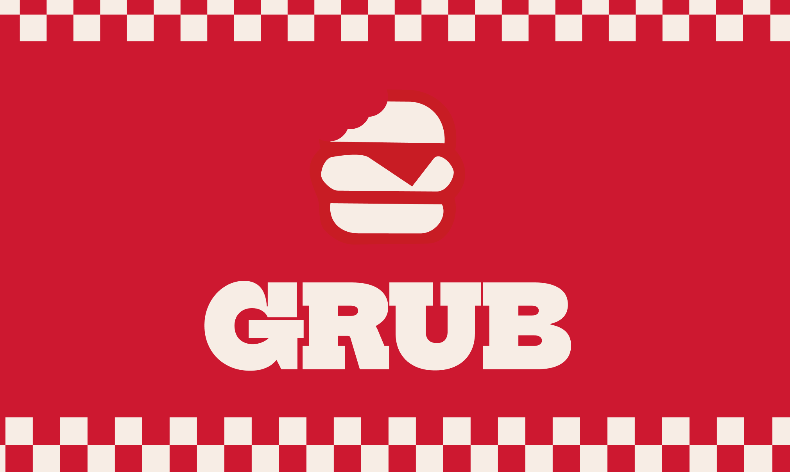
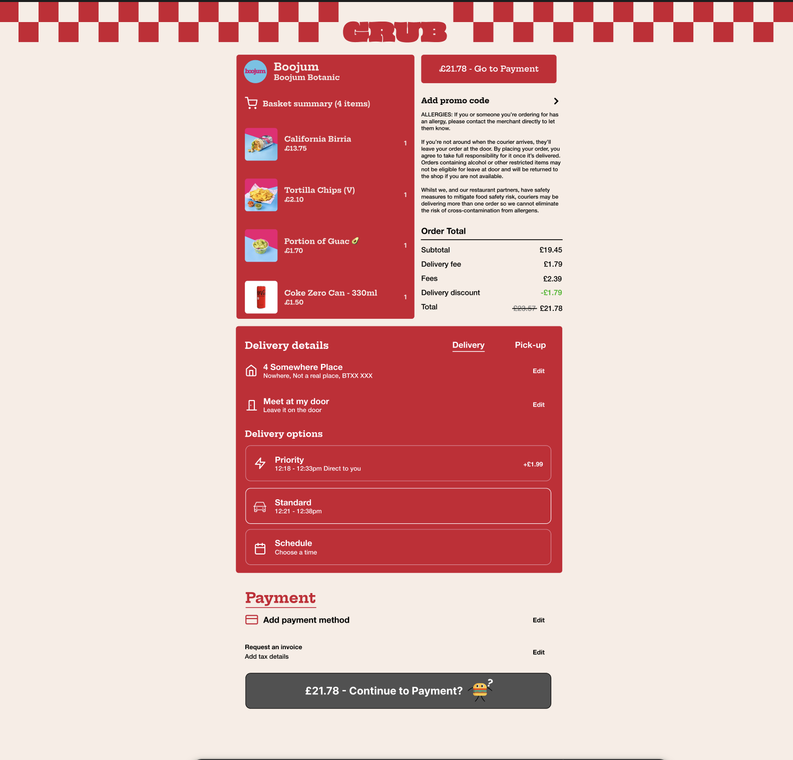

How Microinteractions Support the User Journey
Grub: a food ordering prototype

Summary Of Project
Grub is a fake food delivery service I branded and prototyped to answer one question: how do microinteractions support the user journey when ordering food?
Open the prototype in Figma ↗Project Specifications
-
The project ran for 5 weeks.
-
Software: Figma (Smart Animate).
-
4 microinteractions, each with multiple states.
-
Each runs for 0.5–3 seconds at 30fps or more.
-
AI use: how AI was (and wasn’t) used.
The Brief
The brief tasked me with a five-week project to design three distinct, prototype-ready micro-animations that enhance user feedback and interaction flow across digital interfaces. I chose from a set list of core UI components, such as CTA buttons, loading states and form validation. Each interaction had to have multiple functional states, run for between 0.5 and 3 seconds, and hold at least 30fps in a single prototyping tool like Figma.
Beyond creating smooth visuals, the core requirement was to show purposeful motion design and usability: lightweight performance, a consistent visual style across all three animations, and accessible reduced-motion alternatives, supported by a clear rationale for timing and easing decisions.
Ideation
Originally, I planned to make three examples to support my statement: an airline service, a gaming service and a food service. I found that was too much and too hard to implement well, so I decided to focus on one service, food, which gave me more time to brand everything.
I started by researching food delivery services like Uber Eats, and then I came up with my own fake brand, called Grub.

Development
1. The payment button
The first microinteraction I made was the payment button. I wanted a payment button that was fun, but that also reduced panic purchases. When you go to pay for your food, you have the option to cancel, because you may look at your order at the last second and see you’ve forgotten something. I then used Smart Animate in Figma to bring it to life.

2. The drop-down menu
I then moved on to more microinteractions. I created a drop-down menu to fix the clutter the website was facing.
3. The delivery and pickup toggle
I noticed something on a lot of food service websites: you can switch between delivery and pickup. That switch is a microinteraction in itself, giving the user the choice between collecting the order and having it delivered, so it needed to be built in too. I used Smart Animate in Figma to transition between the two and make it clear which option you were picking.
4. The savings notification
Finally, I made a notification that appears when you open the prototype, telling the user they saved some money!
Prototype
Here is the final version of the prototype. Click through it below, or open it full screen in Figma.
So, how do microinteractions support the user journey when ordering food?
I wrote an entire essay on this, but for the sake of time, I’ll sum it up.
Microinteractions reduce cognitive load, establish a clear visual hierarchy and build trust. In online food delivery, where clarity and reassurance matter, microinteractions lift the Grub platform from a simple ordering tool to an engaging, accessible and seamless experience that supports the user journey when ordering food.
If you want the full version, the essay is below. Scroll inside the window to read it.
AI Transparency
WRITE YOUR AI STATEMENT HERE.
Reflection
I loved this project. Designing a fake food service portal and creating a brand identity were a lot of fun, and working with motion was the best part. I wish I could push this project further and create a fully fledged food service app or website, but I’d need a budget, more research and more experience to do so, which is totally okay.
I loved making this project, and I hope you enjoy it too!
Read my notes on Notion (opens in a new tab)